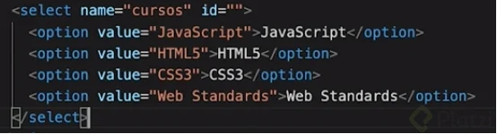
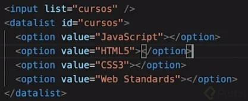

Como valor del atributo value=" ", se tiene que colocar lo mismo que va dentro del elemento < option >, porque cuando el usuario seleccione la opción, el valor es lo que se va a guardar y es lo que se estaria enviando a la base de datos (db).
Buenas prácticas:< input list=" " >, la manera ideal de realizar la función de la etiqueta < select > | (Solo si hay demasiadas opciones)
Se pueden visualizar las opciones al hacer click en la flecha que aparece, cuando hacemos focus sobre la caja de texto con el cursor. También podemos escribir sobre la caja de texto, para poder ver las opciones que tengan palabras o letras que coincidan con lo que hemos escrito, esto para encontrar rápidamente la opción que estamos buscando. También podemos recaudar información del usuario, al momento de que el mismo usuario introduzca un nuevo dato en la caja de texto, con esto también podemos hacer una validación para enviar un mensaje de retorno, al usuario.
Así le estarás dando una mejor opción al usuario, de encontrar lo que está buscando, sin tener que hacer scroll infinito para llegar a esa opción.
Para crear inputs con una lista de varias opciones, se puede desarrollar de dos maneras diferentes:
Etiqueta < select >: Esta permite crear la lista, con las etiquetas < option >.
."/>
Bloque de código de la etiqueta < select >.
Etiqueta < input list = “ ” >: De este modo, se puede utilizar una etiqueta < datalist > con etiquetas < option > dentro del input. Así, el usuario podrá escribir dentro del input, y filtrar los resultados de la lista.

Bloque de código.